Book I
The Road That Would Not Kneel
The first road opens beneath black wings. Wounded lives begin to gather, old powers take notice and a family starts forming where no crown intended one.
The Saga Shelf
Twenty named roads. One epic story. The first road is The Road That Would Not Kneel.
“A book is a road that remembers every footstep.”

Book I · The First Road
The first road opens beneath black wings. Wounded lives begin to gather, old powers take notice, and a family starts forming where no crown intended one.
“Every road remembers. Every oath has a price.”
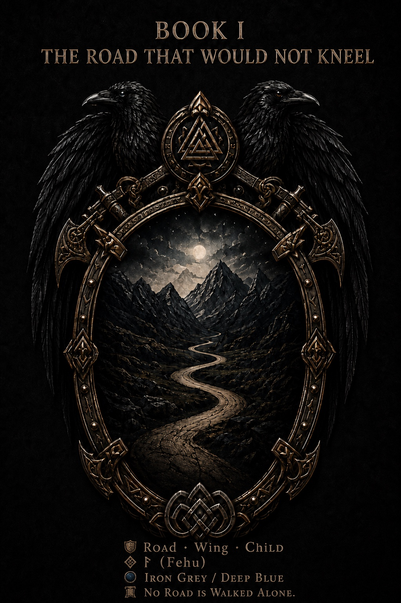
The Main Saga
The Saga of Black Wings is planned as a twenty-volume epic. Each volume has its own title and storyline. Choose a shield for a short introduction that leaves the story’s secrets inside the books.
BOOK I
ROAD · WING · CHILD
BOOK II
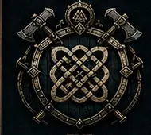
KNOT · LAW · RECKONING
BOOK III
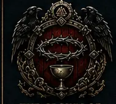
CROWN · SALT · THORNS
BOOK IV
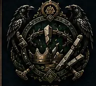
BROKEN CROWN · MARSH LAW
BOOK V
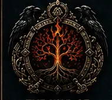
ROOT · FIRE · BLOODLINE
BOOK VI
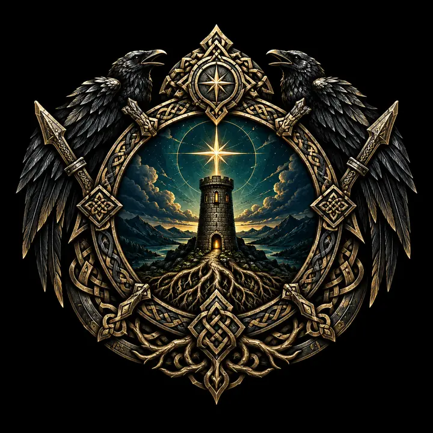
ROOT · RISE · GATE
BOOK VII
SEVER · FRACTURE · TRUTH
BOOK VIII
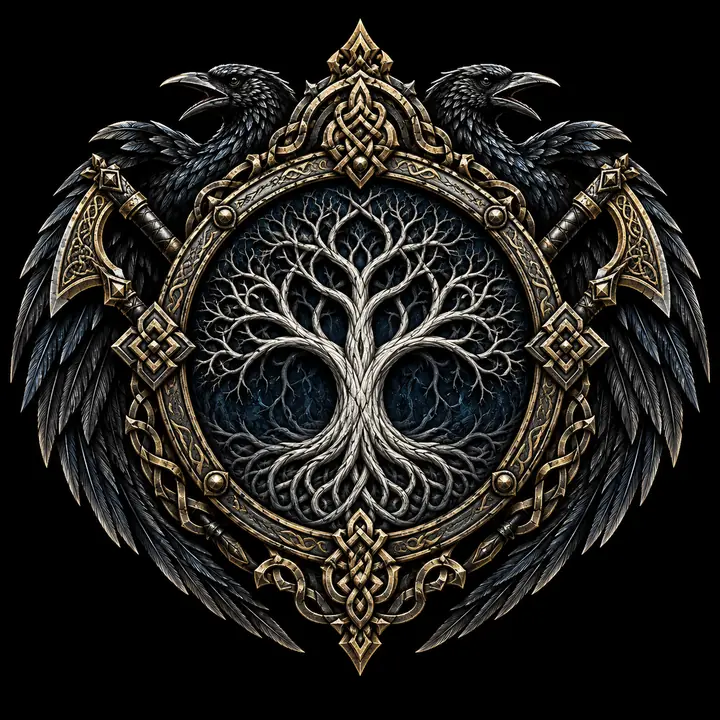
LAST ROOT · TRUE NAME
BOOK IX
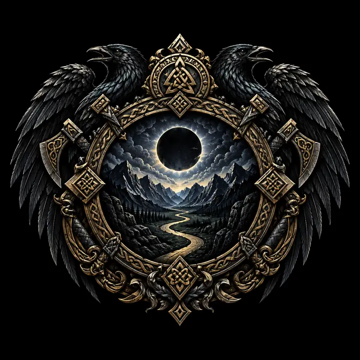
NO ROOT · WRONG TURNS
BOOK X
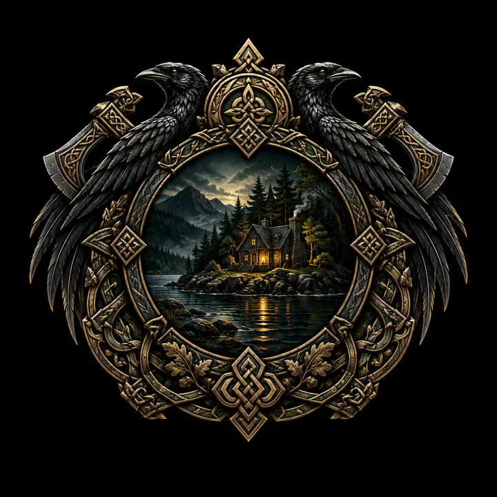
SANCTUARY · HEARTH · ISLE
BOOK XI
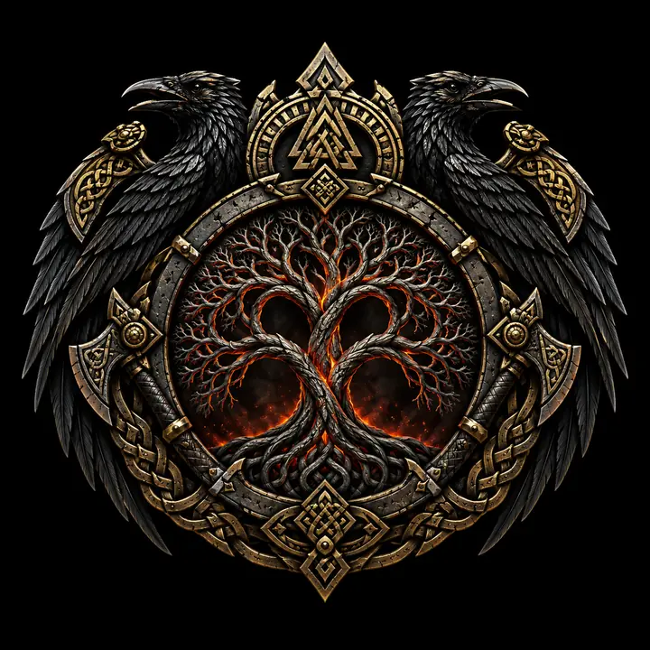
ASH · AGREEMENT · MERCY
BOOK XII
REFUSAL · CHILD · ROAD
BOOK XIII
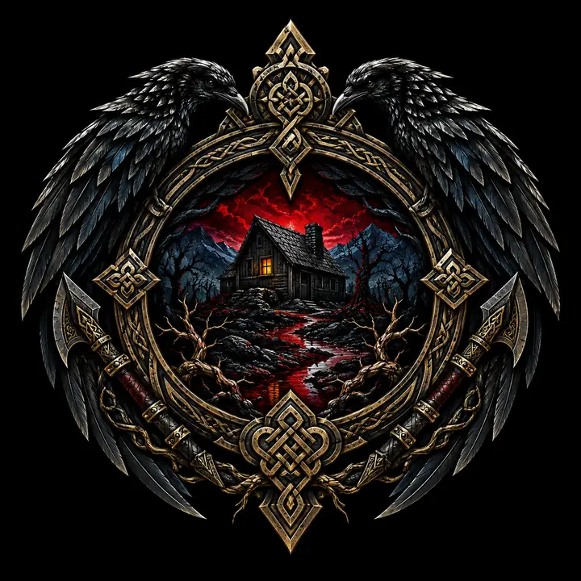
HOME · WOUND · RAVEN
BOOK XIV
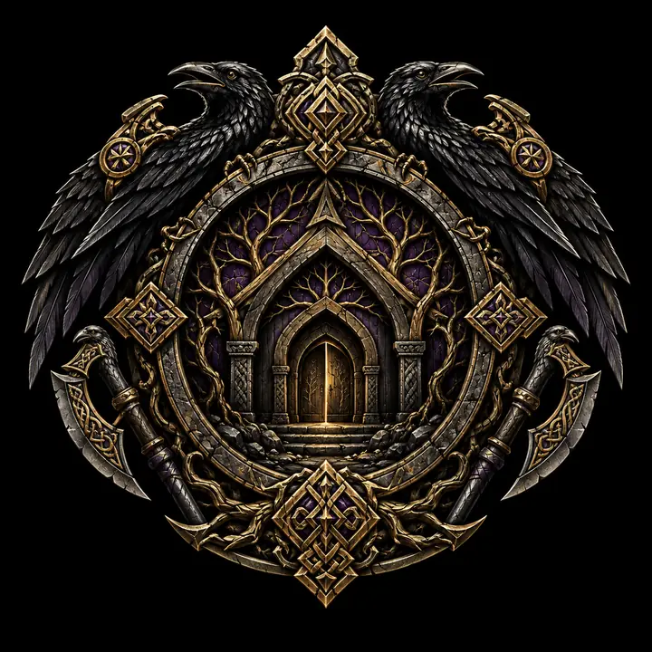
HIDDEN HOUSE · TRUTH · BLOODLINE
BOOK XV
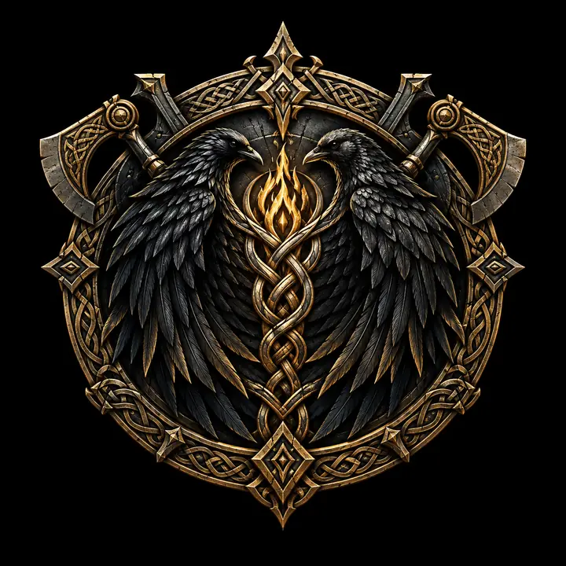
BRAID · OATH · ALL WHO STAND BESIDE
BOOK XVI
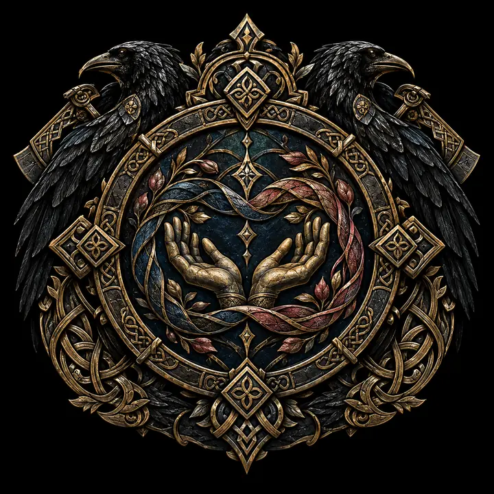
LOVE · CHOICE · NO COUNTING
BOOK XVII
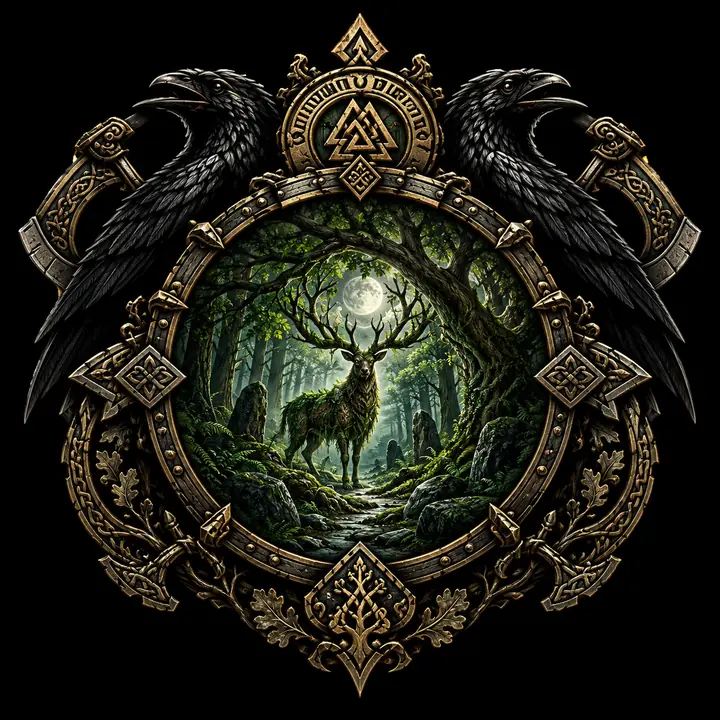
WOOD · GUARDIAN · HIDDEN PATH
BOOK XVIII
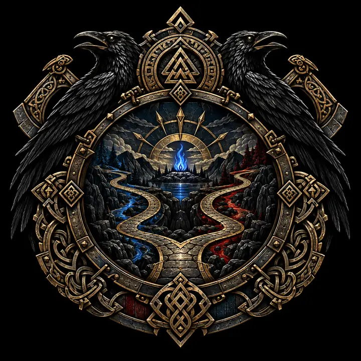
TWO ROADS · ANSWER · RETURN
BOOK XIX
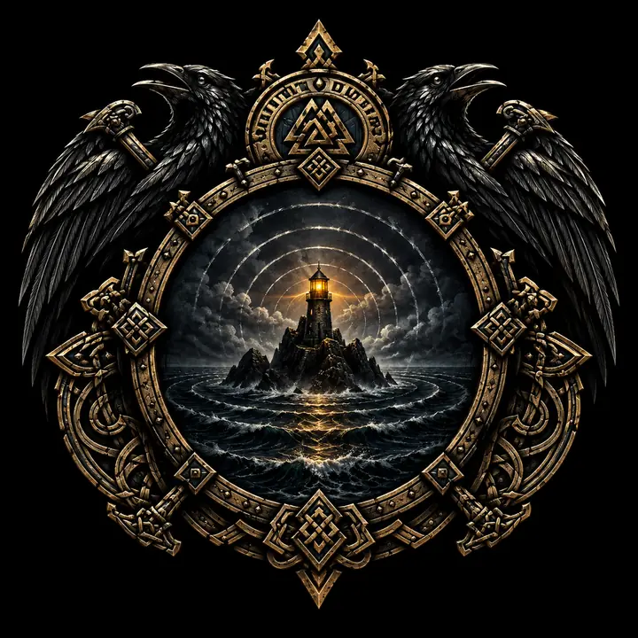
WITNESS · ISLE · LAST LIGHT
BOOK XX
HOME · JOINING · DAWN
Books I to IV
Book I
The first road opens beneath black wings. Wounded lives begin to gather, old powers take notice and a family starts forming where no crown intended one.
Book II
Debt, law and witness tighten around the living. The cost of being counted by hostile hands becomes impossible to ignore.
Book III
Crown pressure deepens across road, house and family. Power learns to hide inside procedure, silence and fear.
Book IV
Old truths begin breaking through the foundations of power as living refusal answers the Crown.
Books V to VIII
Book V
Something ancient stirs beneath the known world. Roots carry memory, hunger and laws that were never properly buried.
Book VI
The buried conflict rises into open ground. Those above must decide what they will protect, surrender or become.
Book VII
Bonds, roads and loyalties are cut apart. Survival demands choices that cannot be made cleanly.
Book VIII
The oldest root approaches a reckoning. What will become of those whose world depends on it?
Books IX to XII
Book IX
An unfamiliar silence settles over the roads. The survivors must decide what freedom demands of them now.
Book X
Peace arrives unevenly. Beneath its surface, old wounds, hidden bargains and unspoken names continue to move.
Book XI
New promises are written over old ruin. Every agreement carries memory, and every peace has someone watching its edges.
Book XII
One final demand reaches the people who have already surrendered too much. Their answer changes what refusal can mean.
Books XIII to XV
Book XIII
A house becomes witness, shelter and inheritance. The past returns through rooms that remember every name once spoken inside them.
Book XIV
Beyond the familiar hearth lies another threshold. The family must cross it without allowing the road to decide who they are.
Book XV
The scattered strands gather. Love, friendship, witness and survival become a living bond that no crown can own or measure.
“No crown shall count us smaller.”
Books XVI to XX
Book XVI
The living Braid grows through love, disaster, reunion and the stubborn work of remaining beside one another.
Book XVII
A forest keeper arrives with a great bear and knowledge of roots that should have remained silent.
Book XVIII
An old road answers again, carrying memory, consequence and return toward those who once believed the question settled.
Book XIX
A final light keeps watch where sea, memory and witness meet. What it reveals belongs to the book.
Book XX
The farthest road turns toward home. After all the Braid has carried, what will home ask of them?
Individual Stories
These companion books follow individual lives and bonds within the Braid. They are separate from the twenty numbered volumes of the main saga.
Companion Book
The animals have roads of their own. Meet the companions who notice what people miss, give warning when words fail, and decide for themselves where to place their trust.
Beyond Black Wings
Timothy M Halliday is also developing The Saga of Forgotten Roads, a separate fantasy saga.
What Lives Inside the Saga
“The story does not ask who was born important. It asks who remained when remaining became difficult.”
Continue Exploring
Meet the people, animals, houses and old laws moving through the books.